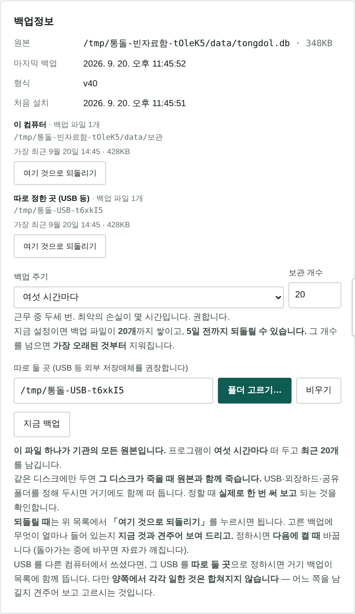
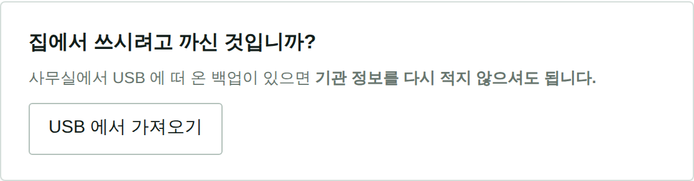
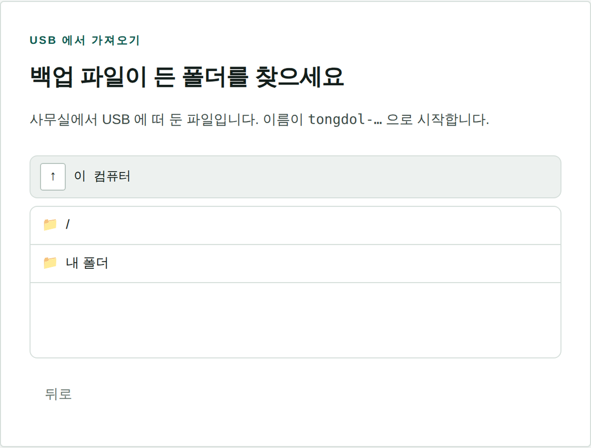
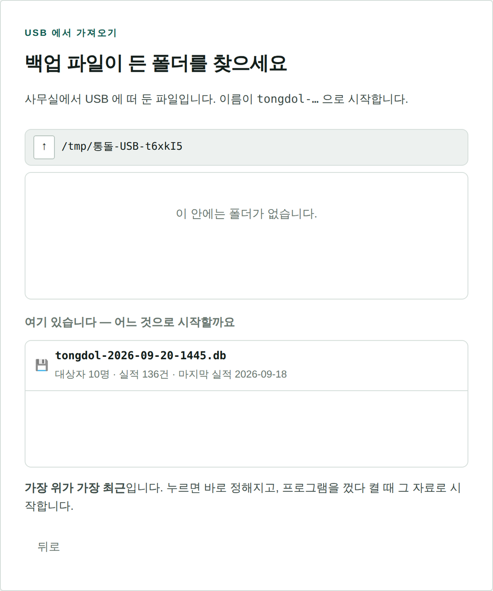
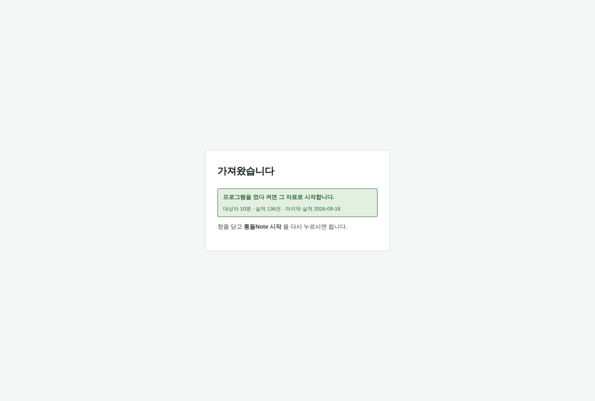
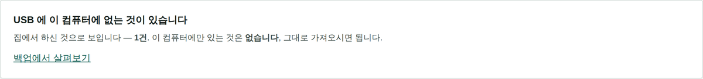
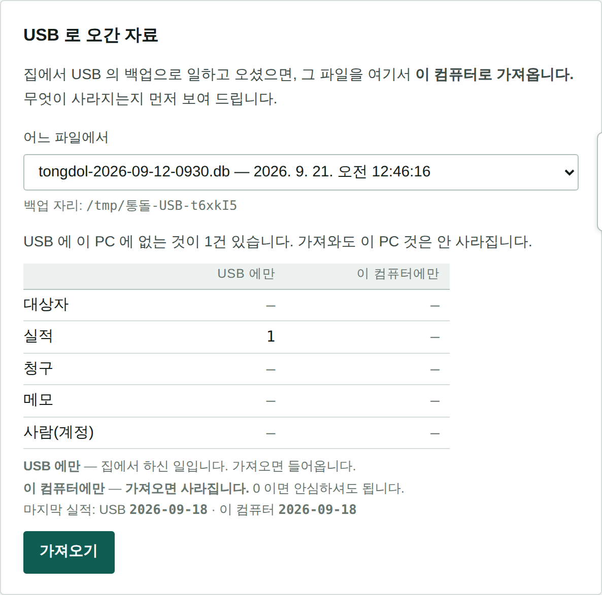

사무실에서 떠 온 백업으로 집에서 마저 일하고, 다음 날 아침에 도로 하나로 맞추는 길.
딱 하나만 기억하시면 됩니다
다음 날 아침, 사무실에서 아무것도 넣기 전에 먼저 가져오세요.
이 기능은 두 자료를 섞지 않습니다. 통째로 바꿔 넣습니다. 아침에 실적을 먼저 넣고 나서 가져오면 그 실적이 사라집니다. (화면이 「이 컴퓨터에만 몇 건」인지 먼저 세어 보여 주긴 합니다 — 그래도 아침에 먼저 하는 편이 낫습니다.)
이 프로그램의 자료는 파일 하나에 다 들어 있습니다. 그래서 집에서 일하려면 그 파일을 USB 에 떠서 가져가야 하고, 그 순간부터 자료함이 둘이 됩니다 — 집 것과 사무실 것. 다음 날 그 둘을 도로 하나로 맞추는 것이 이 종이의 내용입니다.
1·2 는 처음 한 번입니다. 그 다음부터는 3 → 4 → 5 만 하시면 되고, 실제로 손이 가는 시간은 하루에 1분이 안 됩니다.
아래 그림에 보이는 주소(폴더 경로)는 시험용 컴퓨터에서 찍은 것이라 댁의 화면과 다릅니다. 실제로는 D:\ 나 E:\ 로 시작합니다. 누를 자리는 같습니다.
2분 · 처음 한 번
설정 → 백업정보 로 갑니다. 폴더 고르기 를 눌러 USB 드라이브를 고르고, 그 안에 통돌Note백업 같은 칸을 하나 만들어 정하시면 됩니다.

여기서 정해 두면 정한 때마다 저절로 USB 에도 한 부씩 떠 둡니다 (기본 여섯 시간마다). 자료함 옆에 뜨던 것은 그대로 두고 거기에도 함께 뜨는 것입니다.
USB 를 꽂아 둔 채로 두셔도 됩니다
백업이 뜰 때 USB 가 빠져 있으면 그 번만 건너뜁니다. 프로그램이 멈추거나 하지는 않습니다.
5분 · 처음 한 번
사무실에 드린 것과 같은 zip 을 풀고 통돌Note 설치.bat 를 두 번 누르시면 됩니다. 설치 안내 종이에 적힌 그대로입니다.
갓 깔면 기관 개설 화면이 뜹니다. 여기서 기관 정보를 적지 마세요. 맨 위 칸의 USB 에서 가져오기 를 누르시면 됩니다.

집 컴퓨터는 기관이 아닙니다. 여기서 기관을 새로 세우면 사무실과 아무 상관 없는 빈 기관이 하나 더 생깁니다. 가져오기를 쓰면 기관명·계정·대상자·실적이 사무실 것 그대로 들어옵니다.

맨 위 ↑ 는 위로 가기입니다. USB 드라이브(대개 D: 나 E:)를 눌러 들어가서, 1단계에서 만든 폴더까지 가시면 됩니다.

가장 위가 가장 최근입니다. 대상자 몇 명, 실적 몇 건인지가 함께 보이니 「이게 맞나」를 눈으로 보고 고르시면 됩니다.

바로 안 바뀌는 것이 정상입니다. 쓰는 중에 자료를 통째로 갈면 열려 있던 화면이 없는 자료를 가리키게 되기 때문입니다. 창을 닫고 통돌Note 시작 을 다시 누르시면 사무실 자료가 들어와 있습니다.
로그인은 사무실에서 쓰시던 그대로입니다
계정도 자료함 안에 들어 있어서 같이 따라옵니다. 집에서 따로 만들 것이 없습니다.
10초
설정 → 백업정보 → 지금 백업 을 누르고 USB 를 뽑습니다.
저절로 뜨는 백업을 믿고 그냥 뽑으셔도 되지만, 마지막에 한 번 눌러 두는 편이 확실합니다. 여섯 시간마다 뜨니, 오후에 넣은 것이 아직 안 떠 있을 수 있습니다.
10초
둘째 날부터는 집에 오면 먼저 USB 를 꽂고 프로그램을 켭니다. 홈 맨 위에 띠가 뜨면 가져오기 를 누르고 껐다 켠 뒤 일하세요 — 사무실에서 그날 하신 일이 들어옵니다. 가져오지 않고 집에서 일하면, 다음 날 아침 사무실에서 「이 컴퓨터에만 N건」이 뜹니다(양쪽에서 따로 적은 것 — 아래 「막힐 때」).
집에서는 평소처럼 쓰시면 됩니다. 다 하시고 나서 설정 → 백업정보 → 지금 백업 을 눌러 USB 에 떠 두고 뽑습니다.
집에서도 백업 자리가 USB 라야 합니다
백업 자리는 컴퓨터마다 따로 기억합니다. 처음 가져온 집 컴퓨터에는 아직 정해져 있지 않습니다. 집에서도 설정 → 백업정보 에서 USB 폴더를 한 번 정해 주세요. 이것도 처음 한 번입니다 — 그 뒤로는 가져와도 바뀌지 않습니다.
1분 · 이 순서가 제일 중요합니다
USB 를 꽂고 프로그램을 켜면 홈 맨 위에 띠가 뜹니다.

띠가 떠 있는 동안에는 저절로 뜨는 백업이 USB 에 뜨지 않습니다(이 컴퓨터 안에는 뜹니다). 가져오면 다시 USB 에도 뜹니다. 띠를 둔 채 「지금 백업」을 누르면 먼저 가져오시겠느냐고 한 번 묻습니다. 「그래도 백업」을 누르면 USB 에 이 컴퓨터 것이 새로 떠서 띠가 사라지니, 먼저 가져오세요.
띠를 누르거나 설정 → USB 로 오간 자료 로 가면 이렇게 보입니다.

| 보이는 것 | 뜻 |
|---|---|
| USB 에만 N건 | 저쪽(집 또는 사무실)에서 하신 일입니다. 가져오면 들어옵니다 |
| 이 컴퓨터에만 0건 | ✅ 안심하고 누르셔도 됩니다. 사라질 것이 없습니다 |
| 이 컴퓨터에만 N건 | ❌ 그 N건이 사라집니다. 아침에 벌써 무언가 넣으셨다는 뜻입니다 — 아래 「막힐 때」를 보세요 |
가져오기 를 누르고 껐다 켜면 끝입니다.
누르기 전에 지금 것을 한 부 자동으로 떠 둡니다 (보관\tongdol-되돌리기전-…). 잘못 누르셨어도 돌아갈 자리가 있습니다.
그 USB 안에는 어르신들의 이름·주소·연락처가 통째로 들어 있습니다
백업 파일 하나가 곧 기관의 자료 전부입니다. 잃어버리면 개인정보가 통째로 나간 것입니다. 그래서 —
집 컴퓨터도 마찬가지입니다. 식구가 같이 쓰는 컴퓨터라면 윈도 계정을 따로 두고 암호를 거는 편이 낫습니다.
| 이런 일이 생기면 | 이렇게 하세요 |
|---|---|
| 아침에 벌써 실적을 넣었는데 「이 컴퓨터에만 3건」이 뜬다 |
가져오기를 누르지 마세요. 그 3건을 종이에 적어 두고 가져온 뒤 다시 넣는 것이 가장 안전합니다. 3건보다 많으면 그날은 가져오지 마시고 집에서 한 것을 손으로 다시 넣으세요 |
| 띠가 안 뜬다 | USB 가 꽂혀 있는지, 설정 → 백업정보 의 백업 자리가 그 USB 폴더인지 보세요. 자료함 옆(이 컴퓨터 안)으로 되어 있으면 오갈 것이 없습니다 |
| 띠가 떴는데 「그래도 백업」을 눌렀다 | USB 에 이 컴퓨터 것이 새로 떠서 띠가 사라집니다. 설정 → USB 로 오간 자료 의 「어느 파일에서」에서 저쪽에서 뜬 파일(그 아래 줄)을 골라 숫자를 보고 가져오세요 |
| USB 의 자료함이 더 새 버전입니다 | 사무실 통돌 Note 가 집보다 새 버전입니다. 집 것을 먼저 새 버전으로 올리세요. 그냥 가져오면 새 버전에서 적은 것이 조용히 사라집니다 |
| 그 폴더에 통돌 Note 백업 파일이 없습니다 | 폴더를 잘못 고르셨거나, 퇴근 전 「지금 백업」을 안 누르셨습니다. 파일 이름은 tongdol-2026-09-11-1830.db 모양입니다 |
| 잘못 가져왔다 | 설정 → 백업정보 의 목록에서 tongdol-되돌리기전-… 을 고르면 돌아갑니다 |
| 집에서 넣은 것이 안 보인다 | 집에서 나올 때 「지금 백업」을 안 누르셨을 수 있습니다. 집 컴퓨터가 그대로 있으면 거기서 다시 눌러 USB 에 떠 오시면 됩니다 |
이 종이는 USB 로 집에서 일하는 길만 다룹니다. 깔고 켜는 것은 설치 안내, 날마다 쓰는 법은 사용설명서 를 보세요.
통돌 Note · v1.27.40 · 2026-10-09